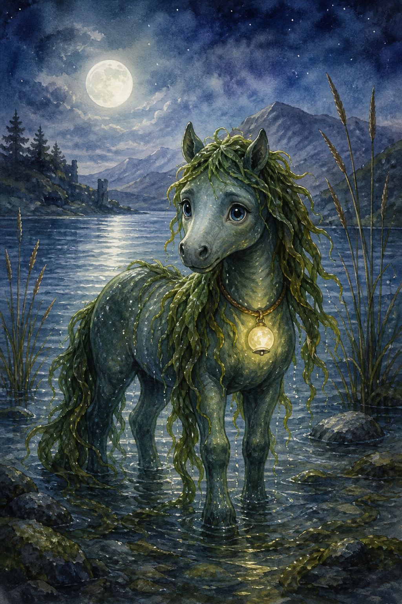
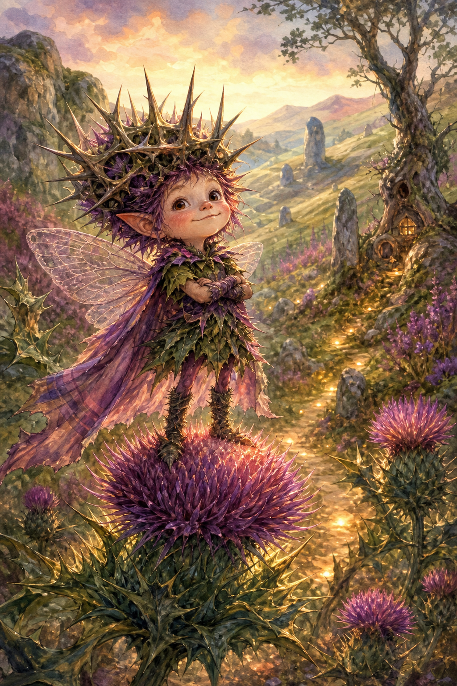
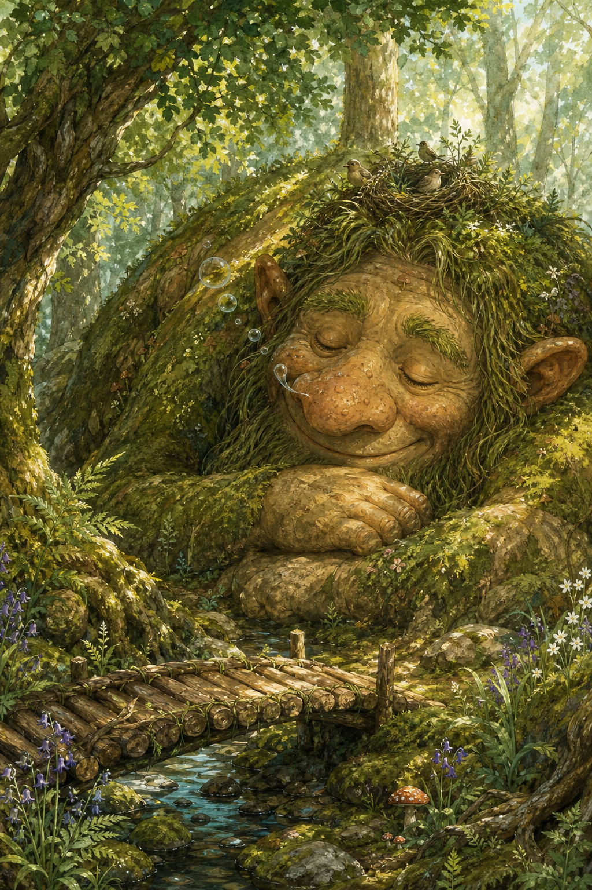
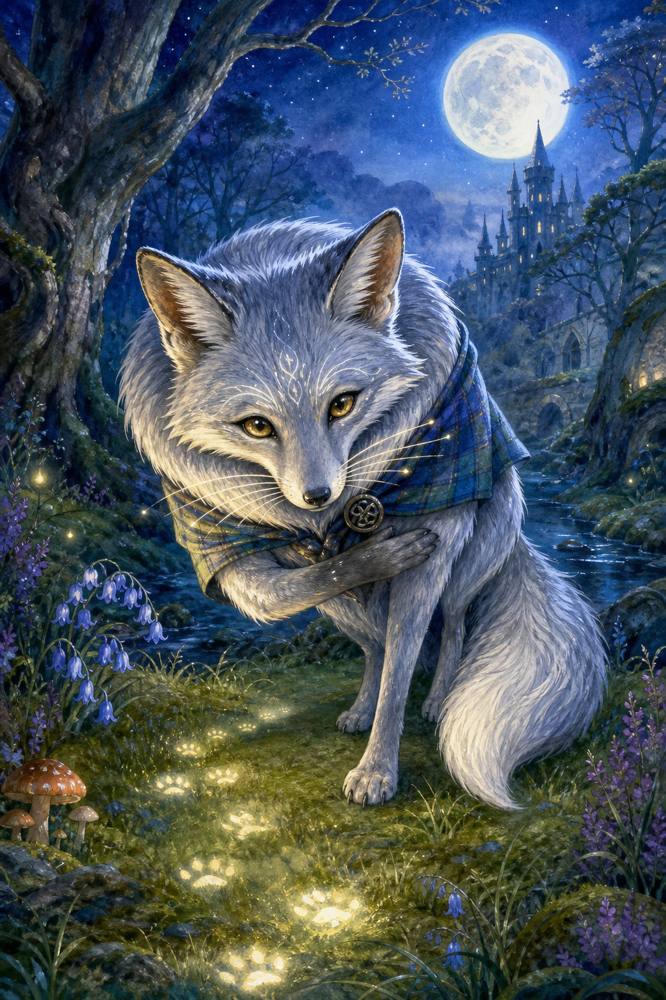
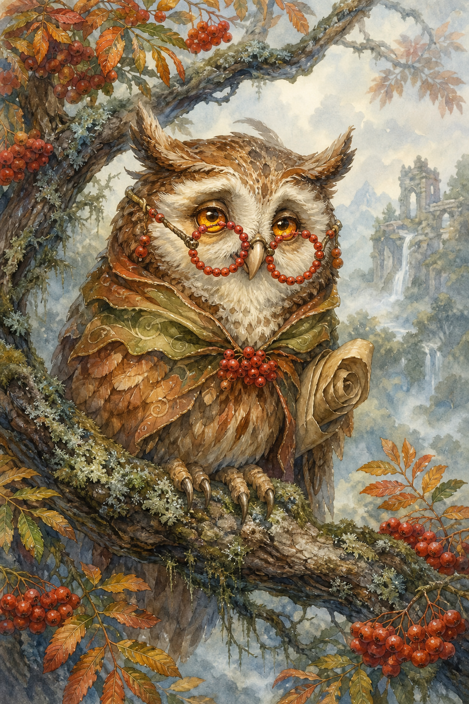
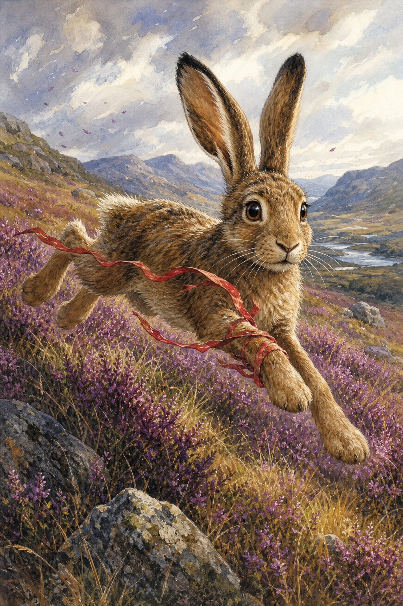
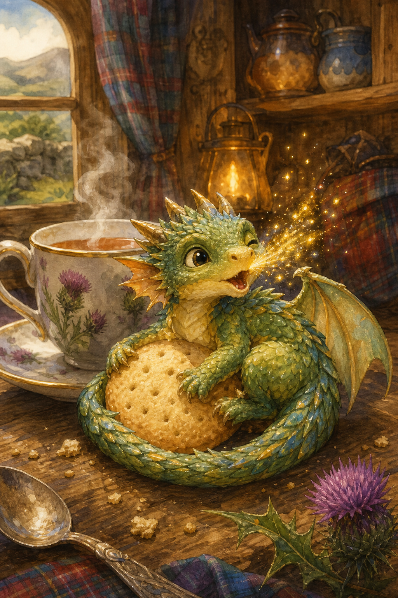
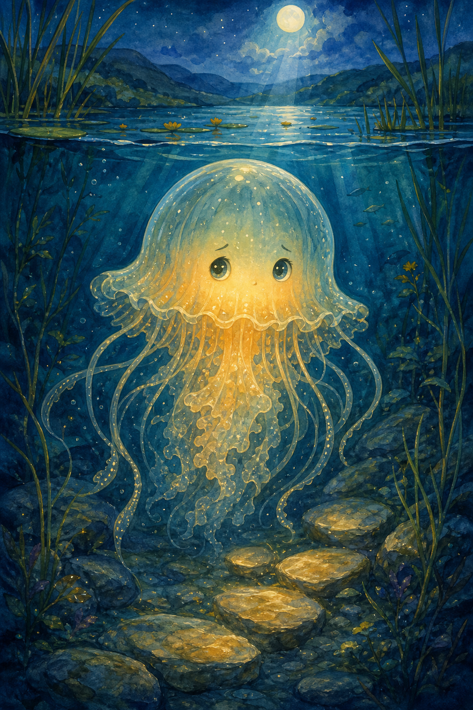
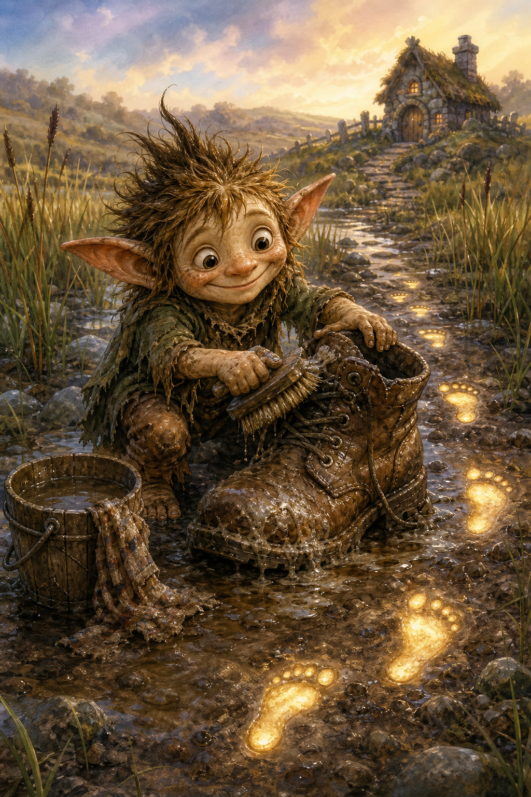
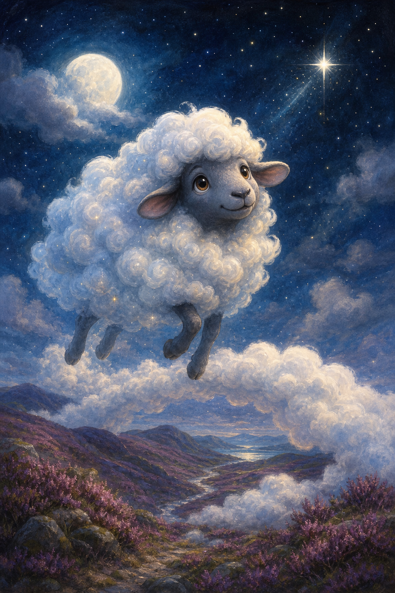

Bestiary
Friendly creatures, gentle problems, stat blocks, and encounter ideas
How to use creature stat blocks
Creatures now have classic fantasy stat blocks, but they are still story-first. Stats help the Guide choose a roll when a creature resists, races, hides, puzzles, or needs calming.
| Stat | Creature use |
|---|---|
| Strength | Push, hold, carry, stomp, protect. |
| Int | Riddles, tricks, memories, old magic. |
| Agility | Race, dodge, fly, swim, sneak. |
| Wis | Feelings, nature, noticing, animal sense. |
| Luck | Fairy weirdness, charm magic, surprises. |

Moon-Kelpie Foal
A nervous water-pony child with a kelp mane and a moon-bell collar. It wants to be brave but splashes when startled.
Wants
Its moon-bell returned.
Helps by
Carries one hero safely across shallow water.
Moves
- Moonlit Splash: makes stepping stones shimmer for one turn.
- Foal Gallop: races across water if someone sings softly.
Complication
Splashes the map when startled.
Gentle approach
Name its feeling, offer one kind idea, then roll only if the moment is exciting.
Treasure/friend reward
A clue, safe path, charm, drawing prompt, or promise for later.

Thistle Sprite
A tiny proud fairy with a thorn crown too large for its head. It guards paths because it secretly feels lonely.
Wants
Someone to admire its thorn crown.
Helps by
Shows a hidden fairy path.
Moves
- Prickle Point: blocks a rude shortcut with harmless thistles.
- Royal Decree: demands a compliment or tiny flag.
Complication
Gets offended by rude pointing.
Gentle approach
Name its feeling, offer one kind idea, then roll only if the moment is exciting.
Treasure/friend reward
A clue, safe path, charm, drawing prompt, or promise for later.

Moss Troll Napper
A huge mossy troll who only wants a quiet nap. Birds nest in its hair and bubbles puff from its nose.
Wants
A quieter place to nap.
Helps by
Lifts a log bridge.
Moves
- Gentle Lift: moves something heavy without breaking it.
- Bubble Snore: floats clues away unless caught.
Complication
Snores bubbles that float away clues.
Gentle approach
Name its feeling, offer one kind idea, then roll only if the moment is exciting.
Treasure/friend reward
A clue, safe path, charm, drawing prompt, or promise for later.

Silver Fox Familiar
A polite fox with silver whiskers, clever eyes, and too many compliments. It knows tracks no one else can see.
Wants
A riddle answered.
Helps by
Leads heroes to tracks.
Moves
- Compliment Riddle: gives a clue wrapped in praise.
- Silver Step: vanishes behind moonlit grass.
Complication
Only speaks in compliments.
Gentle approach
Name its feeling, offer one kind idea, then roll only if the moment is exciting.
Treasure/friend reward
A clue, safe path, charm, drawing prompt, or promise for later.

Rowan Owl
An old owl wearing rowan berries like spectacles. It sees through mist but forgets names at the funniest time.
Wants
Help remembering a name.
Helps by
Sees through mist.
Moves
- Mist Sight: spots hidden doors or feelings.
- Old Acorn Advice: gives wise advice with one wrong noun.
Complication
Calls everyone “young acorn.”
Gentle approach
Name its feeling, offer one kind idea, then roll only if the moment is exciting.
Treasure/friend reward
A clue, safe path, charm, drawing prompt, or promise for later.

Heather Hare
A fast hare with a red ribbon tangled around one paw. It is worried, quick, and very easy to startle.
Wants
Its red ribbon untangled.
Helps by
Carries a message.
Moves
- Zigzag Dash: outruns almost anything on open heather.
- Ear Twitch: hears danger before it arrives.
Complication
Keeps changing direction.
Gentle approach
Name its feeling, offer one kind idea, then roll only if the moment is exciting.
Treasure/friend reward
A clue, safe path, charm, drawing prompt, or promise for later.

Teacup Dragon
A biscuit-sized dragon who lives in warm cups and thinks it is enormous. Its sparks are bright but small.
Wants
A biscuit and apology.
Helps by
Boils water for tea or steam clues.
Moves
- Steam Puff: reveals invisible writing.
- Spark Sneeze: lights a candle or startles a puddle.
Complication
Sneezes sparks into puddles.
Gentle approach
Name its feeling, offer one kind idea, then roll only if the moment is exciting.
Treasure/friend reward
A clue, safe path, charm, drawing prompt, or promise for later.

Loch Lantern Jelly
A shy glowing jelly that floats under dark water like a little lantern. It dims when shouted at.
Wants
A dark pool made less lonely.
Helps by
Lights underwater steps.
Moves
- Soft Glow: lights a safe route beneath the surface.
- Drift Away: escapes loud scenes without anger.
Complication
Floats away if shouted at.
Gentle approach
Name its feeling, offer one kind idea, then roll only if the moment is exciting.
Treasure/friend reward
A clue, safe path, charm, drawing prompt, or promise for later.

Bog-Boot Brownie
A muddy household fairy who loves cleaning boots, even when boots are not the problem.
Wants
A pair of boots to clean.
Helps by
Finds footprints.
Moves
- Mud Map: reads footprints like a story.
- Scrub Scrub: cleans one item until it shines.
Complication
Cleans the wrong thing first.
Gentle approach
Name its feeling, offer one kind idea, then roll only if the moment is exciting.
Treasure/friend reward
A clue, safe path, charm, drawing prompt, or promise for later.

Cloud Sheep
A dreamy sheep made of soft cloud wool. It drifts through sky meadows and forgets which star is its shepherd.
Wants
A shepherd star.
Helps by
Makes a fluffy bridge.
Moves
- Cloud Bridge: makes one soft crossing for careful feet.
- Dream Drift: carries a clue into the sky.
Complication
Drifts when children giggle.
Gentle approach
Name its feeling, offer one kind idea, then roll only if the moment is exciting.
Treasure/friend reward
A clue, safe path, charm, drawing prompt, or promise for later.
Creature builder
| Roll | Animal | Fairy twist | Best stat |
|---|---|---|---|
| 1 | Fox | silver whiskers | Int |
| 2 | Hare | bell tail | Agility |
| 3 | Owl | moon glasses | Wis |
| 4 | Pony | kelp mane | Strength |
| 5 | Dragon | teacup size | Luck |
| 6 | Sheep | cloud wool | Luck |
Set the stats
Pick one +3, one +2, two +1, and one +0. Very tiny creatures may have one -1 and one +3.
Make it child-friendly
Replace defeat with help, chase, song, puzzle, promise, snack, or finding a lost thing.
Choose moves
Give it two safe moves: one helpful, one troublesome.
Reward idea
A friend, clue, safe path, tiny charm, bedtime-song note, or funny drawing prompt.